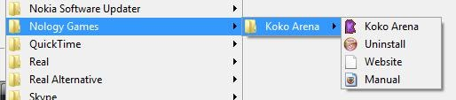

Download the full version of each game below, then follow How to install.
If the files are not yet available here, you can also get them from the legacy Google Drive folder.
How to install
- Download the game from the list above.
- Extract the ZIP file contents.
- Execute the Setup.exe file inside it.
- Follow the installer instructions.
- Run the game through the Start Menu → Nology Games → "Name of the Game" → "Name of the Game" (see below).

How to uninstall
- Go to the Start Menu → Nology Games → "Name of the Game" and execute Uninstall.
or
- Go to Start Menu → Settings → Control Panel. Find the game in the list and uninstall it.